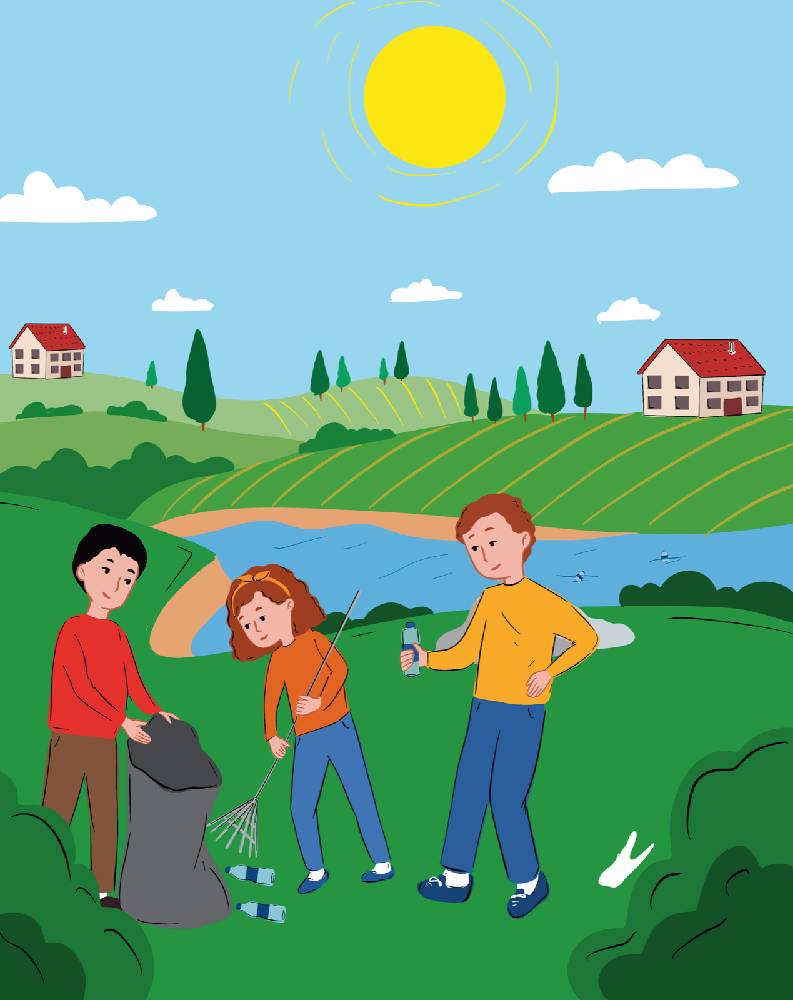

Mjedisi i vendit tim
Ndotja e ujërave
Mali vizitonte dajat e tij çdo pushim pranveror. Aq shumë e donte natyrën e fshatit, saqë nuk pranonte kurrsesi të kalonte diku tjetër pushimet. Çdo gjë i dukej e mrekullueshme në fshat: relievi, harmonia e njerëzve, lidhja e tyre me natyrën, mënyra se si e punonin tokën, produktet që merrnin nga toka.
E vetmja gjë që e shqetësonte ishte lumi i fshatit. Pse banorët hidhnin mbeturina në lumë? Pse banorët nuk pastronin lumin njëherë e përgjithmonë? Pse fshatarët nuk shpëtonin nga kundërmimi i erës së keqe që shkaktonin mbeturinat?
Mali e kishte kuptuar se tanimë nuk ishte i vogël për të bërë gjëra të mëdha. Ai kishte plot shokë në fshat me të cilët luante. Mali dha idenë i pari që të shkonin së bashku me shokët për t’i larguar të gjitha letrat që ishin afër lumit. Po sikur të kërkojmë ndihmë nga të rriturit për këtë gjë, çfarë do të na thoshin? Fëmijët, që mezi prisnin të kalonin kohën së bashku, thanë të gjithë njëzëri: “Le ta provojmë!”.
Mali me shoqen e tij, Erën, ndërkohë që po mblidhnin mbeturinat bashkë me fshatarët, po bisedonin se sa keq ishin ndier kur kishin kaluar pushimet në det vitin e kaluar. Ata kishin parë që deti ishte i mbushur me qeska najloni e mbetje ushqimesh. Nuk arrinin të gjenin dot një përgjigje për këto veprime. Uji, elementi kyç i jetës së gjallesave, a mos është duke u ndotur shumë nga njeriu? "Njeriu duhet të ndalojë së bëri këto veprime të dëmshme", - ishin fjalët e Yllit, i cili ndërpreu bisedën e Malit dhe të Erës.
